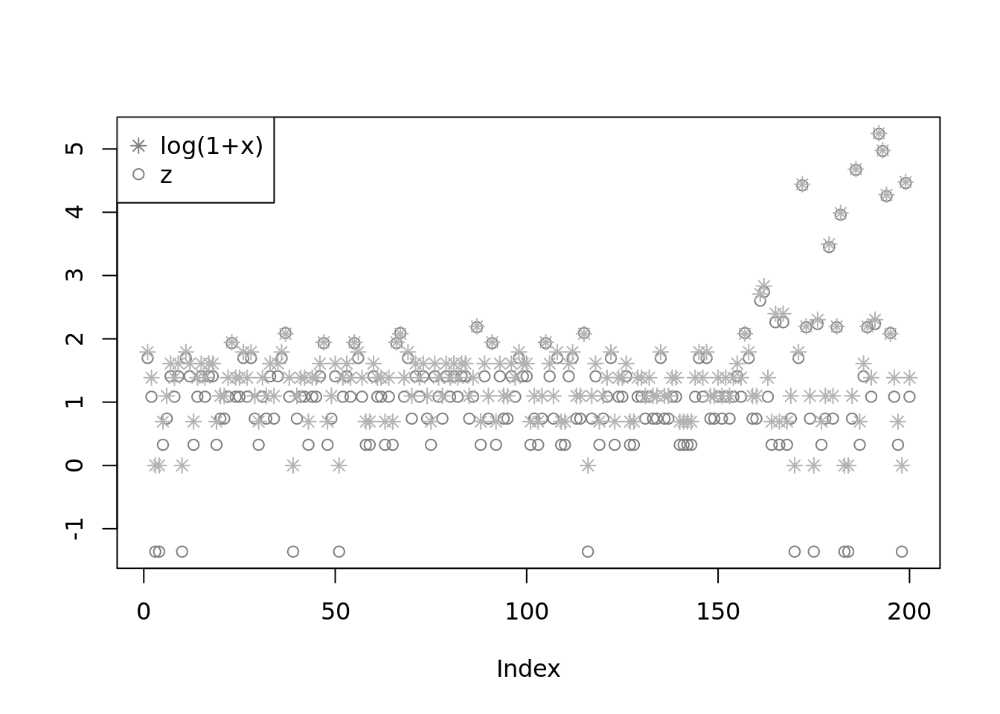
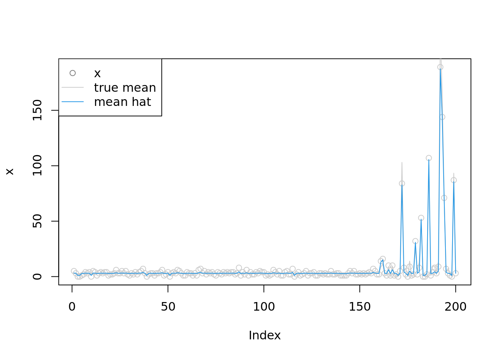
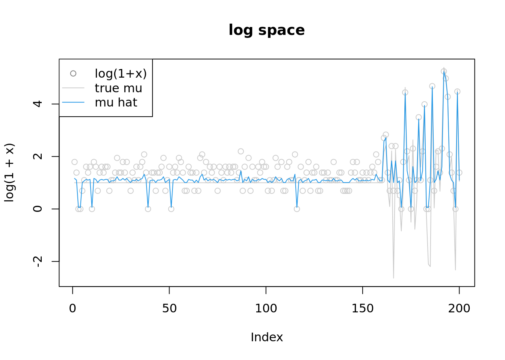

poisson mean via penalized form
Dongyue Xie
2022-05-16
Last updated: 2022-10-14
Checks: 7 0
Knit directory: gsmash/
This reproducible R Markdown analysis was created with workflowr (version 1.7.0). The Checks tab describes the reproducibility checks that were applied when the results were created. The Past versions tab lists the development history.
Great! Since the R Markdown file has been committed to the Git repository, you know the exact version of the code that produced these results.
Great job! The global environment was empty. Objects defined in the global environment can affect the analysis in your R Markdown file in unknown ways. For reproduciblity it’s best to always run the code in an empty environment.
The command set.seed(20220606) was run prior to running
the code in the R Markdown file. Setting a seed ensures that any results
that rely on randomness, e.g. subsampling or permutations, are
reproducible.
Great job! Recording the operating system, R version, and package versions is critical for reproducibility.
Nice! There were no cached chunks for this analysis, so you can be confident that you successfully produced the results during this run.
Great job! Using relative paths to the files within your workflowr project makes it easier to run your code on other machines.
Great! You are using Git for version control. Tracking code development and connecting the code version to the results is critical for reproducibility.
The results in this page were generated with repository version 114b4fa. See the Past versions tab to see a history of the changes made to the R Markdown and HTML files.
Note that you need to be careful to ensure that all relevant files for
the analysis have been committed to Git prior to generating the results
(you can use wflow_publish or
wflow_git_commit). workflowr only checks the R Markdown
file, but you know if there are other scripts or data files that it
depends on. Below is the status of the Git repository when the results
were generated:
Ignored files:
Ignored: .Rproj.user/
Ignored: analysis/figure/
Unstaged changes:
Modified: analysis/index.Rmd
Modified: code/poisson_mean/pois_mean_GMGM.R
Note that any generated files, e.g. HTML, png, CSS, etc., are not included in this status report because it is ok for generated content to have uncommitted changes.
These are the previous versions of the repository in which changes were
made to the R Markdown (analysis/pois_mean_penalized.Rmd)
and HTML (docs/pois_mean_penalized.html) files. If you’ve
configured a remote Git repository (see ?wflow_git_remote),
click on the hyperlinks in the table below to view the files as they
were in that past version.
| File | Version | Author | Date | Message |
|---|---|---|---|---|
| Rmd | 114b4fa | DongyueXie | 2022-10-14 | wflow_publish("analysis/pois_mean_penalized.Rmd") |
| html | 475e236 | Dongyue Xie | 2022-09-26 | Build site. |
| Rmd | afbcd7b | Dongyue Xie | 2022-09-26 | wflow_publish("analysis/pois_mean_penalized.Rmd") |
| html | 3e8e7d2 | Dongyue Xie | 2022-09-26 | Build site. |
| Rmd | f15734b | Dongyue Xie | 2022-09-26 | wflow_publish("analysis/pois_mean_penalized.Rmd") |
Introduction
source("code/normal_mean_model_utils.R")#'objective function, sum over h_i()
#'@param params (z,s2,a,mu)
#'@param y data vector
#'@param grid prior sds
#'@return objective value, a scalar
h_obj = function(params,y,grid){
n = length(y)
K = length(grid)
z = params[1:n]
v = params[(n+1):(2*n)]
s = sqrt(exp(v))
w = softmax(params[(2*n+1):(2*n+K)])
mu = params[2*n+K+1]
return(h_obj_calc(z,s,w,mu,y,grid))
}
h_obj_calc = function(z,s,w,mu,y,grid){
theta = S(z,s,w,mu,grid)
return(sum(exp(theta)-y*theta-l_nm(z,s,w,mu,grid)-(theta-z)^2/2/s^2-log(s^2)/2))
}
#'@return the gradient of objective function
h_obj_grad = function(params,y,grid){
n = length(y)
K = length(grid)
z = params[1:n]
v = params[(n+1):(2*n)]
s = sqrt(exp(v))
a = params[(2*n+1):(2*n+K)]
w = softmax(a)
mu = params[2*n+K+1]
return(h_obj_grad_calc(z,s,v,w,a,mu,y,grid))
}
h_obj_grad_calc = function(z,s,v,w,a,mu,y,grid){
return(c(h_obj_d1_z_calc(z,s,w,mu,y,grid),h_obj_d1_s2_calc(z,s,w,mu,y,grid)*exp(v),h_obj_d1_g_calc(z,s,a,mu,y,grid)))
}
#'objective function derivative wrt z
#'@param params (z,s2,a,mu)
#'@param y data vector
#'@param grid prior sds
#'@return a length n vector of gradients
# h_obj_d1_z = function(params,y,grid){
# n = length(y)
# K = length(grid)
# z = params[1:n]
# s = sqrt(params[(n+1):(2*n)])
# a = params[(2*n+1):(2*n+K)]
# mu = params[2*n+K+1]
# return(h_obj_d1_z_calc(z,s,a,mu,y,grid))
# }
h_obj_d1_z_calc = function(z,s,w,mu,y,grid){
l_dz = l_nm_d1_z(z,s,w,mu,grid)
l_dz2 = l_nm_d2_z(z,s,w,mu,grid)
theta = S(z,s,w,mu,grid)
return(-(y-exp(theta))*(1+s^2*l_dz2)-l_dz-(theta-z)*l_dz2)
}
#'objective function derivative wrt s2
#'@param theta (z,s2,a)
#'@param y data vector
#'@param grid prior sds
#'@return a length n vector of gradients
# h_obj_d1_s2 = function(params,y,grid){
# n = length(y)
# K = length(grid)
# z = params[1:n]
# s = sqrt(params[(n+1):(2*n)])
# a = params[(2*n+1):(2*n+K)]
# mu = params[2*n+K+1]
# return(h_obj_d1_s2_calc(z,s,a,mu,y,grid))
#
# }
h_obj_d1_s2_calc = function(z,s,w,mu,y,grid){
l_dz = l_nm_d1_z(z,s,w,mu,grid)
l_dzds2 = l_nm_d2_zs2(z,s,w,mu,grid)
l_ds2 = l_nm_d1_s2(z,s,w,mu,grid)
theta = S(z,s,w,mu,grid)
S_ds2 = l_dz + s^2*l_dzds2
return(-(y-exp(theta))*S_ds2-l_ds2-(theta-z)*S_ds2/s^2+(theta-z)^2/2/s^4-1/2/s^2)
}
#'objective function derivative wrt a
#'@param theta (z,s2,a)
#'@param y data vector
#'@param grid prior sds
#'@return a length K vector of gradients
# h_obj_d1_g = function(params,y,grid){
# n = length(y)
# K = length(grid)
# z = params[1:n]
# s = sqrt(params[(n+1):(2*n)])
# a = params[(2*n+1):(2*n+K)]
# mu = params[2*n+K+1]
# return(h_obj_d1_g_calc(z,s,a,mu,y,grid))
# }
h_obj_d1_g_calc = function(z,s,a,mu,y,grid){
w = softmax(a)
l_dzda = l_nm_d2_za(z,s,a,mu,grid)
l_dzdmu = l_nm_d2_zmu(z,s,w,mu,grid)
l_da = l_nm_d1_a(z,s,a,mu,grid)
l_dmu = l_nm_d1_mu(z,s,w,mu,grid)
theta = S(z,s,w,mu,grid)
S_da = s^2*l_dzda
S_dmu = s^2*l_dzdmu
grad_a = -(y-exp(theta))*S_da - l_da - (theta-z)*S_da/s^2
grad_mu = -(y-exp(theta))*S_dmu - l_dmu - (theta-z)*S_dmu/s^2
return(c(c(colSums(grad_a)),c(sum(grad_mu))))
}
#'@title calculate constraint function
#'@param theta (z,s2,a)
#'@return a vector of length n, constraint function values
h_cstr = function(params,y,grid){
n = length(y)
K = length(grid)
z = params[1:n]
v = params[(n+1):(2*n)]
s = sqrt(exp(v))
a = params[(2*n+1):(2*n+K)]
w = softmax(a)
mu = params[2*n+K+1]
return(h_cstr_calc(z,s,w,mu,grid))
}
h_cstr_calc = function(z,s,w,mu,grid){
theta = S(z,s,w,mu,grid)
return(log(s^2)+theta)
}
h_cstr_grad = function(params,y,grid){
n = length(y)
K = length(grid)
z = params[1:n]
v = params[(n+1):(2*n)]
s = sqrt(exp(v))
a = params[(2*n+1):(2*n+K)]
w = softmax(a)
mu = params[2*n+K+1]
return(h_cstr_grad_calc(z,s,v,w,a,mu,grid))
}
h_cstr_grad_calc = function(z,s,v,w,a,mu,grid){
return(cbind(diag(h_cstr_d1_z_calc(z,s,w,mu,grid)),diag(h_cstr_d1_s2_calc(z,s,w,mu,grid)*exp(v)),h_cstr_d1_g_calc(z,s,a,mu,grid)))
}
#'@title calculate constraint function derivative wrt z
#'@param theta (z,s2,a,mu)
#'@return a vector of length n gradient
# h_cstr_d1_z = function(params,y,grid){
# n = length(y)
# K = length(grid)
# z = params[1:n]
# s = sqrt(params[(n+1):(2*n)])
# a = params[(2*n+1):(2*n+K)]
# w = softmax(a)
# mu = params[2*n+K+1]
# return(h_cstr_d1_z_calc(z,s,w,mu,grid))
# }
h_cstr_d1_z_calc = function(z,s,w,mu,grid){
return(1+s^2*l_nm_d2_z(z,s,w,mu,grid))
}
#'@title calculate constraint function derivative wrt s2
#'@param theta (z,s2,a,mu)
#'@return a vector of length n gradient
# h_cstr_d1_s2 = function(theta,y,grid){
# n = length(y)
# z = theta[1:n]
# s2 = theta[(n+1):(2*n)]
# a = theta[-(1:(2*n))]
# return(h_cstr_d1_s2_calc(z,s2,a,grid))
# }
h_cstr_d1_s2_calc = function(z,s,w,mu,grid){
return(1/s^2+l_nm_d1_z(z,s,w,mu,grid)+s^2*l_nm_d2_zs2(z,s,w,mu,grid))
}
#'@title The gradient of constraint function w.r.t a
#'@return a n*K matrix
# h_cstr_d1_a = function(theta,y,grid){
# n = length(y)
# K = length(grid)
# z = theta[1:n]
# s2 = theta[(n+1):(2*n)]
# a = theta[-(1:(2*n))]
# return(h_cstr_d1_a_calc(z,s2,a,grid))
# }
h_cstr_d1_g_calc = function(z,s,a,mu,grid){
w = softmax(a)
l_dzda = l_nm_d2_za(z,s,a,mu,grid)
l_dzdmu = l_nm_d2_zmu(z,s,w,mu,grid)
return(s^2*cbind(l_dzda,l_dzdmu))
}We solve the following Poisson mean problem by optimization method, \[x_i\sim Poisson(\exp\mu_i),\mu_i\sim g(\cdot)\]
This method replaces \(\theta\) by \(S_g(z,s^2)\). The final optimization problem is \[\begin{equation} \begin{split} &\min_{z,s^2,g}h(z,s^2,g) = -l(S_g(z,s^2)) -l_{\text{NM}}(z;g,s^2) - \frac{(S_g(z,s^2)-z)^2}{2s^2}- \frac{1}{2}\log 2\pi s^2 \\ &\text{subject to } s^2 = (-l''(S_g(z,s^2)))^{-1}, s^2>0. \end{split} \end{equation}\]
We can either form Lagrangian multiplier and solve a system of nonlinear equations, or using existing solver for solving the equality constrained optimization problem. (We can re-parameterize \(s^2\) as \(s^2 = \exp(v)\) to avoid the inequality constraint.)
We first generate data and fit poisson ash with log link.
library(ashr)
set.seed(12345)
w = c(0.8,0.2)
n = 200
mu = c(rnorm(n*w[1],1,0),rnorm(n*w[2],1,2))
lambda = exp(mu)
x = rpois(n,exp(mu))
fit.ash = ash_pois(x,1,link='log')
fit.ash$fitted_g$pi
[1] 0.00000000 0.78352925 0.00000000 0.00000000 0.00000000 0.00000000
[7] 0.00000000 0.00000000 0.07102210 0.03142074 0.00000000 0.00000000
[13] 0.11402791 0.00000000 0.00000000 0.00000000 0.00000000 0.00000000
[19] 0.00000000 0.00000000 0.00000000 0.00000000 0.00000000 0.00000000
[25] 0.00000000 0.00000000
$a
[1] 1.12559896 1.03410935 0.99621311 0.94261973 0.86682726
[6] 0.75964051 0.60805555 0.39368205 0.09051213 -0.33823487
[11] -0.94457469 -1.80206870 -3.01474835 -4.72973636 -7.15509566
[16] -10.58507168 -15.43579028 -22.29574232 -31.99717953 -45.71708361
[21] -65.11995803 -92.55976618 -131.36551501 -186.24513132 -263.85662899
[26] -373.61586159
$b
[1] 1.125599 1.217089 1.254985 1.308578 1.384371 1.491557
[7] 1.643142 1.857516 2.160686 2.589433 3.195773 4.053267
[13] 5.265946 6.980934 9.406294 12.836270 17.686988 24.546940
[19] 34.248377 47.968282 67.371156 94.810964 133.616713 188.496329
[25] 266.107827 375.867060
attr(,"class")
[1] "unimix"
attr(,"row.names")
[1] 1 2 3 4 5 6 7 8 9 10 11 12 13 14 15 16 17 18 19 20 21 22 23 24 25
[26] 26plot(x,col='grey80',main='ash fit')
lines(exp(mu),col='grey80')
lines(fit.ash$result$PosteriorMean,col=4)
legend('topleft',c('data','ash posterior mean'), pch=c(1,NA),lty=c(NA,1),col=c('grey50',4))
| Version | Author | Date |
|---|---|---|
| 3e8e7d2 | Dongyue Xie | 2022-09-26 |
plot(log(x),col='grey80',main='ash pois fit, log space',ylim=range(c(log(lambda),log(fit.ash$result$PosteriorMean),log(x+1))))
lines(log(lambda),col='grey80')
lines(log(fit.ash$result$PosteriorMean),col=4)
legend('topleft',c('log(x)','true mu','ash pm'),pch=c(1,NA,NA),lty=c(NA,1,1),col=c('grey80','grey80',4))
Solve a system of nonlinear equations, derived from Lagrangian multiplier
known prior
Now we fit the penalized poisson mean problem when prior is known.
#'@param params (z,v,lambda)
L_grad_known_g = function(params,y,w,mu,grid){
n = length(y)
z = params[1:n]
v = params[(n+1):(2*n)]
s = sqrt(exp(v))
lambda = params[(2*n+1):(3*n)]
L_dz = h_obj_d1_z_calc(z,s,w,mu,y,grid) - lambda*h_cstr_d1_z_calc(z,s,w,mu,grid)
L_dv = (h_obj_d1_s2_calc(z,s,w,mu,y,grid) - lambda*h_cstr_d1_s2_calc(z,s,w,mu,grid))*exp(v)
L_dlambda = h_cstr_calc(z,s,w,mu,grid)
return(c(L_dz,L_dv,L_dlambda))
}
#'@param params (z,v,lambda,a,mu)
L_grad = function(params,y,grid){
n = length(y)
K = length(grid)
z = params[1:n]
v = params[(n+1):(2*n)]
s = sqrt(exp(v))
lambda = params[(2*n+1):(3*n)]
a = params[(3*n+1):(3*n+K)]
w = softmax(a)
mu = params[3*n+K+1]
L_dz = h_obj_d1_z_calc(z,s,w,mu,y,grid) - lambda*h_cstr_d1_z_calc(z,s,w,mu,grid)
L_dv = (h_obj_d1_s2_calc(z,s,w,mu,y,grid) - lambda*h_cstr_d1_s2_calc(z,s,w,mu,grid))*exp(v)
L_dlambda = h_cstr_calc(z,s,w,mu,grid)
L_dg = h_obj_d1_g_calc(z,s,a,mu,y,grid) - colSums(lambda*h_cstr_d1_g_calc(z,s,a,mu,grid))
return(c(L_dz,L_dv,L_dlambda,L_dg))
}pois_mean_penalized_nleqslv = function(x,
w=NULL,
mu=NULL,
grid,
est_g = TRUE,
z_init = NULL,
lambda_init = NULL,
opt_method='Newton'){
n = length(x)
K = length(grid)
if(is.null(w)){
w = rep(1/K,K)
est_g = TRUE
}
if(is.null(mu)){
mu=0
}
if(is.null(z_init)){
z_init = log(1+x)
}
if(is.null(lambda_init)){
lambda_init = rep(1,n)
}
if(est_g){
theta0 = c(z_init,-z_init,lambda_init,w,mu)
fit = nleqslv(theta0,
L_grad,
y=x,
grid=grid,
method = opt_method,
control = list(allowSingular =TRUE))
z=fit$x[1:n]
s2=exp(fit$x[(n+1):(2*n)])
lambda = fit$x[(2*n+1):(3*n)]
w = softmax(fit$x[(3*n+1):(3*n+K)])
mu = fit$x[3*n+K+1]
return(list(z=z,
m=S(z,sqrt(s2),w,mu,grid),
s2=s2,
w=w,
mu=mu,
lambda = lambda,
fit=fit))
}else{
theta0 = c(z_init,-z_init,lambda_init)
fit = nleqslv(theta0,
L_grad_known_g,
y=x,
w=w,
mu=mu,
grid=grid,
method = opt_method,
control = list(allowSingular =TRUE,maxit=100))
z=fit$x[1:n]
s2=exp(fit$x[(n+1):(2*n)])
return(list(z=z,
m=S(z,sqrt(s2),w,mu,grid),
s2=s2,
w=w,
lambda = fit$x[(2*n+1):(3*n)],
fit=fit))
}
}Use nleqslv package.
library(nleqslv)
w = c(0.8,0.2)
grid = c(0,2)
t1=Sys.time()
fit = pois_mean_penalized_nleqslv(x,w=w,mu=1,grid=grid,est_g=FALSE,z_init = log(1+x))
Sys.time() - t1
plot(L_grad_known_g(fit$fit$x,x,w,mu,grid),ylab='gradient',main='check gradient')
plot(fit$z,col='grey50',ylab='')
lines(log(1+x),type='p',pch=8,col='grey70')
legend('topleft',c('log(1+x)','z'), pch=c(8,1),col=c('grey50','grey50'))
plot(x,col='grey80')
#lines(log(1+x),type='p',pch=8,col='grey50')
lines(lambda,col='grey80')
lines(exp(fit$m),col=4)
legend('topleft',c('x','true mean','mean hat'), pch=c(1,NA,NA),lty=c(NA,1,1),col=c('grey50','grey80',4))
plot(log(1+x),col='grey80',ylim=range(c(fit$m,log(1+x),mu)),main='log space')
#lines(log(1+x),type='p',pch=8,col='grey50')
lines(mu,col='grey80')
lines(fit$m,col=4)
legend('topleft',c('log(1+x)','true mu','mu hat'), pch=c(1,NA,NA),lty=c(NA,1,1),col=c('grey50','grey80',4))very slow
estimating prior
grid = c(0,1e-3, 1e-2, 1e-1, 0.16, 0.32, 0.64, 1, 2, 4, 8, 16)
K = length(grid)t1=Sys.time()
fit = pois_mean_penalized_nleqslv(x,w=NULL,mu=NULL,grid=grid,est_g=TRUE,z_init = log(1+x))
Sys.time() - t1
plot(L_grad(fit$fit$x,x,grid),ylab='gradient',main='check gradient')
fit$fit$message
plot(fit$z,col='grey50',ylab='')
lines(log(1+x),type='p',pch=8,col='grey70')
legend('topleft',c('log(1+x)','z'), pch=c(8,1),col=c('grey50','grey50'))
plot(x,col='grey80')
#lines(log(1+x),type='p',pch=8,col='grey50')
lines(lambda,col='grey80')
lines(exp(fit$m),col=4)
legend('topleft',c('x','true mean','mean hat'), pch=c(1,NA,NA),lty=c(NA,1,1),col=c('grey50','grey80',4))
plot(log(1+x),col='grey80',ylim=range(c(fit$m,log(1+x),mu)),main='log space')
#lines(log(1+x),type='p',pch=8,col='grey50')
lines(mu,col='grey80')
lines(fit$m,col=4)
legend('topleft',c('log(1+x)','true mu','mu hat'), pch=c(1,NA,NA),lty=c(NA,1,1),col=c('grey50','grey80',4))
round(fit$w,3)
fit$mu
plot(grid,fit$w)
fit$s2very slow and says ill-conditoned. Changed to allowsingular = True, 150 iterations, results are not looking good.
Use Solver
Rsolnp
library(Rsolnp)
z_init = log(1+x)
params0 = c(z_init,-z_init,rep(1/K,K),0)
t1 = Sys.time()
out = solnp(params0,fun=h_obj,eqfun=h_cstr,y=x,grid=grid)
Sys.time() - t1Very slow. Says got NAN of objective function.
nloptr
library(nloptr)
z_init = log(1+x)
params0 = c(z_init,-z_init,rep(1/K,K),0)
t1 = Sys.time()
# If you want to use equality constraints, then you should use one of these algorithms:
# NLOPT_LD_AUGLAG, NLOPT_LN_AUGLAG, NLOPT_LD_AUGLAG_EQ, NLOPT_LN_AUGLAG_EQ, NLOPT_GN_ISRES, NLOPT_LD_SLSQP
# algorithm NLOPT_LN_AUGLAG does not use gradients
# algorithm NLOPT_GN_ISRES does not use gradients
# The algorithm NLOPT_LD_AUGLAG needs a local optimizer
# SLSQP code requires O(n2) storage and O(n3) time in n dimensions,
local_opts <- list( "algorithm" = "NLOPT_LD_MMA",
"xtol_rel" = 1.0e-7 )
# NLOPT_LD_AUGLAG works, 4 secs
# NLOPT_LD_SLSQP works, 1min
out = nloptr(params0,eval_f=h_obj,eval_grad_f=h_obj_grad,eval_g_eq=h_cstr,eval_jac_g_eq=h_cstr_grad,
opts = list("algorithm"="NLOPT_LD_AUGLAG",
"local_opts" = local_opts,
print_level=0,
maxeval = 500,
xtol_rel = 1e-4),
y=x,grid=grid)
Sys.time() - t1Time difference of 20.20209 secsz_hat = out$solution[1:n]
s_hat = sqrt(exp(out$solution[(n+1):(2*n)]))
w_hat = softmax(out$solution[(2*n+1):(2*n+K)])
mu_hat = out$solution[(2*n+K+1)]
m = S(z_hat,s_hat,w_hat,mu_hat,grid)
round(w_hat,3) [1] 0.171 0.171 0.170 0.146 0.123 0.062 0.000 0.000 0.158 0.000 0.000 0.000mu_hat[1] 1.102066plot(z_hat,col='grey50',ylab='')
lines(log(1+x),type='p',pch=8,col='grey70')
legend('topleft',c('log(1+x)','z'), pch=c(8,1),col=c('grey50','grey50'))
plot(x,col='grey80')
#lines(log(1+x),type='p',pch=8,col='grey50')
lines(lambda,col='grey80')
lines(exp(m),col=4)
legend('topleft',c('x','true mean','mean hat'), pch=c(1,NA,NA),lty=c(NA,1,1),col=c('grey50','grey80',4))
plot(log(1+x),col='grey80',ylim=range(c(m,log(1+x),mu)),main='log space')
#lines(log(1+x),type='p',pch=8,col='grey50')
lines(mu,col='grey80')
lines(m,col=4)
legend('topleft',c('log(1+x)','true mu','mu hat'), pch=c(1,NA,NA),lty=c(NA,1,1),col=c('grey50','grey80',4))
sessionInfo()R version 4.2.1 (2022-06-23)
Platform: x86_64-pc-linux-gnu (64-bit)
Running under: Ubuntu 20.04.5 LTS
Matrix products: default
BLAS: /usr/lib/x86_64-linux-gnu/blas/libblas.so.3.9.0
LAPACK: /usr/lib/x86_64-linux-gnu/lapack/liblapack.so.3.9.0
locale:
[1] LC_CTYPE=C.UTF-8 LC_NUMERIC=C LC_TIME=C.UTF-8
[4] LC_COLLATE=C.UTF-8 LC_MONETARY=C.UTF-8 LC_MESSAGES=C.UTF-8
[7] LC_PAPER=C.UTF-8 LC_NAME=C LC_ADDRESS=C
[10] LC_TELEPHONE=C LC_MEASUREMENT=C.UTF-8 LC_IDENTIFICATION=C
attached base packages:
[1] parallel stats graphics grDevices utils datasets methods
[8] base
other attached packages:
[1] nloptr_2.0.3 ashr_2.2-54 workflowr_1.7.0
loaded via a namespace (and not attached):
[1] Rcpp_1.0.9 highr_0.9 compiler_4.2.1 pillar_1.8.1
[5] bslib_0.4.0 later_1.3.0 git2r_0.30.1 jquerylib_0.1.4
[9] tools_4.2.1 getPass_0.2-2 digest_0.6.29 lattice_0.20-45
[13] jsonlite_1.8.2 evaluate_0.17 tibble_3.1.8 lifecycle_1.0.3
[17] pkgconfig_2.0.3 rlang_1.0.6 Matrix_1.5-1 cli_3.4.1
[21] rstudioapi_0.14 yaml_2.3.5 xfun_0.33 fastmap_1.1.0
[25] invgamma_1.1 httr_1.4.4 stringr_1.4.1 knitr_1.40
[29] fs_1.5.2 vctrs_0.4.2 sass_0.4.2 grid_4.2.1
[33] rprojroot_2.0.3 glue_1.6.2 R6_2.5.1 processx_3.7.0
[37] fansi_1.0.3 rmarkdown_2.17 mixsqp_0.3-43 irlba_2.3.5.1
[41] callr_3.7.2 magrittr_2.0.3 whisker_0.4 ps_1.7.1
[45] promises_1.2.0.1 htmltools_0.5.3 httpuv_1.6.6 utf8_1.2.2
[49] stringi_1.7.8 truncnorm_1.0-8 SQUAREM_2021.1 cachem_1.0.6